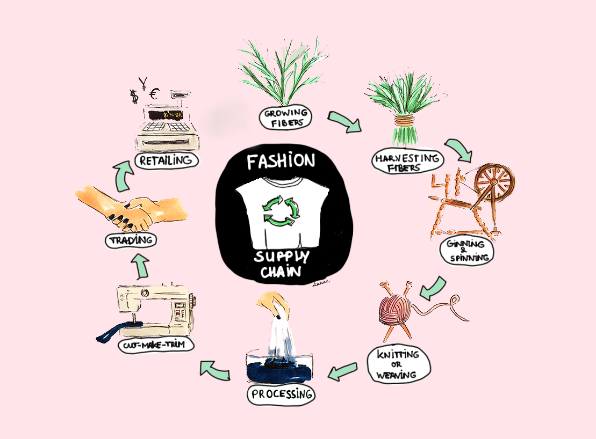

Introduction
We love wearing stylish clothes and apparels. Do you know how garments and apparels are made? Read the next section to know further details about the process.
It all starts with the collection and processing of raw materials (cotton, wool, synthetic materials etc). Yarn is prepared from such raw materials. The yarn prepared in this way is subjected to further processes (weaving, spinning, knitting etc) and is turned into fabric. Fabric is then subjected to processes like dyeing, printing and is fabricated to clothes! The end product, as we all know, is- clothes and apparels that we use!
Textile Technology focuses on various stages involved in textile manufacturing. Right from the production and processing of raw materials to printing and merchandising.
